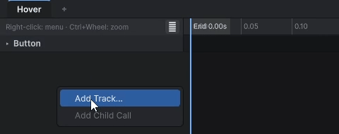
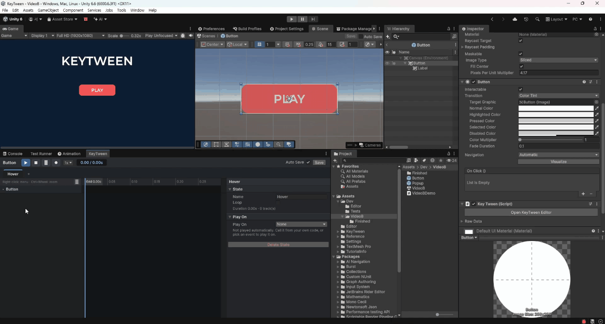

트랙 추가
트랙은 오브젝트 하나의 속성 하나를 움직입니다. 트랙은 트랙 추가 창에서 골라 상태에 넣습니다.
트랙 추가 창 열기
타임라인의 빈 곳을 우클릭하고 Add Track... 항목을 고릅니다.

트랙 고르기
트랙 추가 창의 왼쪽에는 Prefab 안의 오브젝트 트리가 있고, 오른쪽에는 선택한 오브젝트에서 만들 수 있는 트랙 카드가 현재 값과 함께 나옵니다.
- 왼쪽 트리에서 오브젝트를 고릅니다. 트리는 검색할 수 있습니다.
- 오른쪽에서 트랙 카드를 클릭해 고릅니다. 여러 개를 고를 수 있습니다.
- Add N을 누릅니다.

- 카드를 더블클릭하면 바로 추가됩니다.
- 다른 오브젝트로 옮겨 가며 골라도 선택은 유지됩니다.
- 이미 있는 트랙에는
Added표시가 붙습니다.
새 트랙의 기본값
- 0초 키와 상태 끝 시간의 키가 생깁니다. 두 키 모두 지금 값을 가집니다.
- 상태가 비어 있으면 끝 키는 0.2초에 생깁니다.
- Start는 Current Value입니다. Reveal과 글자별 트랙만 Key Value로 생깁니다.
- 끝 키의 도착 방식은 Ease
OutSine입니다. - 글자별 트랙의 Stagger는 0.05초입니다.
Start 옵션은 트랙 옵션을 참고하세요.
만들 수 있는 트랙
트랙 추가 창은 고른 오브젝트에 붙은 컴포넌트에 맞는 트랙만 보여 줍니다.
오브젝트
| 대상 | 트랙 |
|---|---|
| 모든 오브젝트 | Scale, Rotation, Active |
| UI가 아닌 오브젝트 (Transform) | Position, World Position, World Rotation |
UI
| 대상 | 트랙 |
|---|---|
| RectTransform | Position, Size, Anchor Min, Anchor Max, Pivot, Offset Min, Offset Max |
| CanvasGroup | Group Alpha |
| Graphic (Image, RawImage, TMP 등) | Color, Alpha |
| Image (Image Type = Filled) | Fill Amount |
| RawImage | UV Rect |
| Shadow, Outline | Effect Color, Effect Distance |
| RectMask2D | Softness, Padding |
| Slider | Value |
| ScrollRect | Scroll Position |
| LayoutElement | Min Size, Preferred Size, Flexible Size |
TextMeshPro
| 대상 | 트랙 |
|---|---|
| TMP_Text | Font Size, Character Spacing, Word Spacing, Line Spacing, Reveal (Typewriter), Number (Count) |
| TMP_Text 재질 | Outline Width, Outline Color, Face Dilate, Underlay Color |
| TMP_Text 글자별 | Char Scale, Char Position, Char Rotation, Char Color, Char Alpha |
2D, 3D, 카메라, 소리
| 대상 | 트랙 |
|---|---|
| SpriteRenderer | Color, Alpha |
| Renderer (MeshRenderer 등) | Material 트랙: 재질의 색, 숫자, 벡터 속성마다 하나 (예: Material _BaseColor) |
| Light | Light Color, Intensity, Range (Point, Spot), Spot Angle (Spot) |
| Camera | Camera Background, Camera Size, Field of View, Near Clip, Far Clip, Viewport Rect |
| AudioSource | Volume, Pitch |
이벤트와 사운드
| 대상 | 트랙 |
|---|---|
| 루트 | Animation Events, Sound |
그 밖의 트랙
- UIEffect를 설치하면 UIEffect 트랙 14종이 추가됩니다. 자세한 내용은 연동을 참고하세요.
- 프로젝트의 컴포넌트를 움직이는 트랙은 직접 만들 수 있습니다. 자세한 내용은 커스텀 트랙 만들기를 참고하세요.
알아 둘 점
Group Alpha는 화면이나 팝업 전체를 페이드할 때 씁니다. 자세한 내용은 여러 오브젝트를 함께 페이드하기를 참고하세요.Rotation과World Rotation은 오일러 각(도)입니다. 값을 −180~180 범위로 읽으므로, −30°에서 0°로 갈 때 먼 쪽으로 돌지 않습니다.Active는 키 사이를 보간하지 않고, 키 시간에 오브젝트를 켜거나 끕니다.- Material 트랙은 MaterialPropertyBlock으로 씁니다. 재질 에셋은 바뀌지 않고, 같은 재질을 쓰는 다른 오브젝트에도 영향을 주지 않습니다.
- TMP 재질 트랙은 그 텍스트만 쓰는 재질 인스턴스를 만듭니다. 미리보기를 멈추면 원래 재질로 돌아옵니다.
여러 오브젝트를 함께 페이드하기 (CanvasGroup)
팝업, 패널, 화면처럼 자식이 있는 오브젝트를 통째로 나타내거나 사라지게 할 때는 그 오브젝트에 CanvasGroup을 붙이고 Group Alpha 트랙 하나를 씁니다.
- 페이드할 오브젝트(팝업의 루트 등)에 Add Component > Canvas Group을 붙입니다.
- 트랙 추가 창에서 그 오브젝트의
Group Alpha를 고릅니다.CanvasGroup이 없는 오브젝트에는 이 트랙이 나오지 않습니다. - 나타나는 상태에는 0초에 0, 끝에 1인 키를 두고 Start를
Key Value로 합니다. 사라지는 상태에는 끝에 0인 키 하나만 둡니다.
프리셋 Show + Hide와 Open + Close는 오브젝트에 CanvasGroup이 있으면 이 트랙으로 만듭니다. 녹화 중에 인스펙터에서 CanvasGroup의 Alpha를 바꿔도 이 트랙이 생깁니다.
어느 트랙을 쓸까
| 상황 | 트랙 |
|---|---|
| 자식이 있는 팝업, 패널, 화면 전체 | 그 오브젝트의 Group Alpha 하나 |
| 이미지나 텍스트 하나 | 그 그래픽의 Alpha |
| 자식마다 다른 시점에 나타남 | 자식마다 Alpha (자식이 다시 묶음이면 자식마다 CanvasGroup) |
알아 둘 동작
아래는 Unity 6000.6.3f1에서 측정한 uGUI의 동작입니다.
값은 곱해집니다. Group Alpha는 자식 각각의 알파에 곱해집니다.
CanvasGroup안에CanvasGroup이 있으면 그 값도 곱해져서, 0.5 안의 0.5는 0.25로 보입니다. 자식 그룹의 Ignore Parent Groups를 켜면 자기 값만 씁니다.겹친 자식은 서로 비쳐 보입니다. 묶음을 한 장으로 합쳐서 흐리게 하는 것이 아니라 자식을 하나씩 흐리게 합니다. 불투명한 패널이 배경 이미지를 덮고 있어도 페이드 중간에는 배경이 패널 너머로 보이고, 자식마다
Alpha를 준 것과 같은 그림이 나옵니다. 눈에 띄면 페이드를 짧게 잡습니다.알파가 0이어도 입력을 받습니다. 다 사라진 팝업이 켜진 채 남아 있으면 그 아래 버튼의 클릭을 가로챕니다. 닫은 뒤에는 오브젝트를 끄거나
CanvasGroup의 Blocks Raycasts를 끕니다.await popup.PlayAsync("Close"); popup.gameObject.SetActive(false);코드 없이 하려면
Active트랙을 씁니다. 닫는 상태의 끝에 끄는 키를, 여는 상태의 0초에 켜는 키를 둡니다. 이때 KeyTween은 꺼지는 오브젝트의 부모처럼 계속 켜져 있는 오브젝트에 둡니다. KeyTween이 붙은 오브젝트 자신을 끄면 모습은 같지만, 닫는 재생이 취소된 것으로 끝나서await PlayAsync("Close")가OperationCanceledException을 던집니다.입력만 막을 때는 Blocks Raycasts를 끕니다. Interactable을 끄면 그 아래 버튼이 모두 비활성 색으로 바뀌고, 클릭은 여전히 그 버튼에 막혀 아래로 가지 않습니다. 화면 전환 컨테이너도 전환 중 입력을 Blocks Raycasts로 막습니다.
Group Alpha는 그래픽의 메시를 다시 만들지 않습니다.
Alpha와Color트랙은 값이 바뀔 때마다 그 그래픽의 메시를 다시 만들게 합니다. 자식이 많은 묶음은Group Alpha하나로 페이드합니다.
AI 에이전트에게 맡길 때
에이전트의 쓰기 명령은 Group Alpha 트랙이 움직이는 UI 오브젝트에 CanvasGroup이 없으면 붙여 줍니다. 그래서 미리 붙여 두지 않아도 팝업의 페이드가 트랙 하나로 만들어지고, 붙인 것도 같은 Ctrl+Z로 되돌아갑니다. 닫힌 뒤에 오브젝트를 끄는 일은 에이전트가 하지 않으므로 코드에서 합니다. 자세한 내용은 AI 에이전트로 만들기를 참고하세요.
트랙 대상 바꾸기
트랙의 대상을 바꾸려면 트랙 인스펙터 맨 위의 경로 · 속성 ▾ 버튼을 누릅니다.